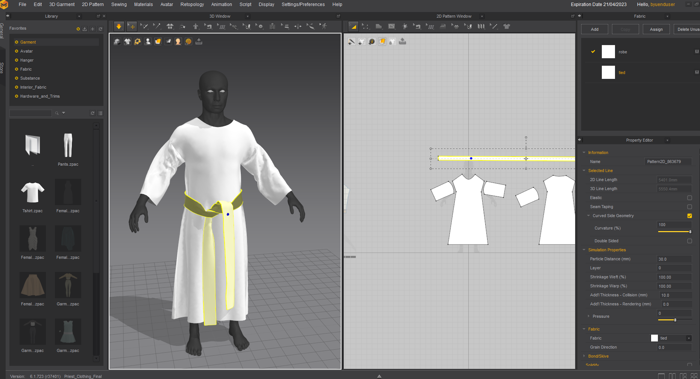
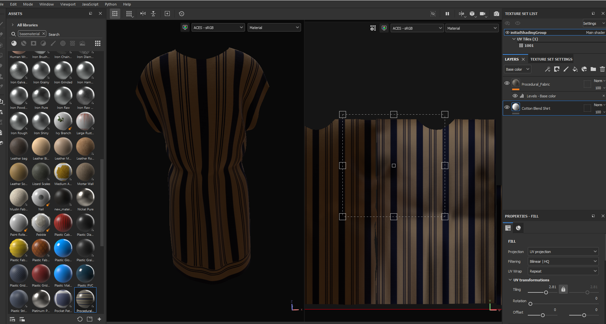
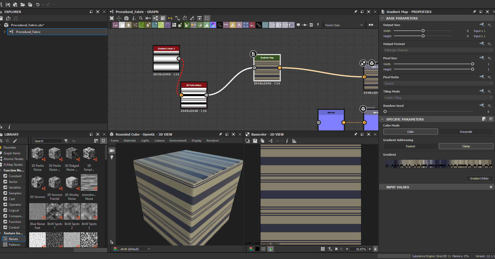

08 / Project detail
MetaHuman Jerusalem
In 2022, I worked as a student character artist on a BYU project creating a virtual recreation of ancient Jerusalem in Unreal Engine. My role focused on developing MetaHuman characters for the environment and creating custom period clothing that could work with the MetaHuman system.
At the time, MetaHumans were still relatively new, and there was limited documentation available for some of the custom clothing workflows we were trying to implement. A significant part of my work involved experimenting with different approaches, troubleshooting problems, and developing a workflow that would allow us to move custom garments from creation into a functioning Unreal character.
Custom MetaHuman Clothing

I created garments in Marvelous Designer, using references to develop clothing appropriate for the characters and setting. From there, I brought the garments into Maya, where I prepared them for the MetaHuman characters and skinned the clothing to the MetaHuman skeleton.
Because the garments needed to move with the existing MetaHuman characters, I spent time refining skin weights and testing different poses and movements to reduce clipping and unwanted deformation.
For texturing, I used Substance Painter and Substance Designer, including creating procedural patterns in Substance Designer that could be used to produce variations of striped fabrics across different garments.


The finished clothing and characters were then brought into Unreal Engine, where the custom clothed body could be integrated with the rest of the MetaHuman setup.

Developing the Workflow
Much of the project became a process of research, experimentation, and trial and error. Rather than following an established pipeline from beginning to end, I often had to investigate how the different systems worked together and determine how to move assets successfully between Marvelous Designer, Maya, and Unreal Engine.
Working through those challenges gave me early experience with something that has continued to interest me throughout my work: figuring out technical workflows between different tools and finding practical solutions when there isn't already a clear process to follow.